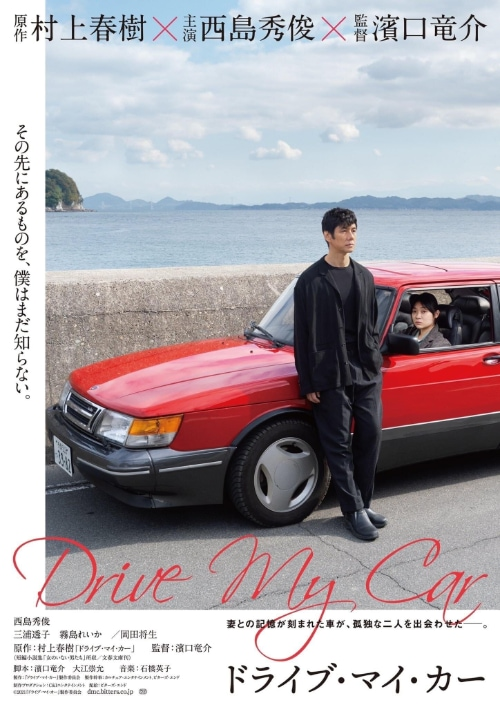
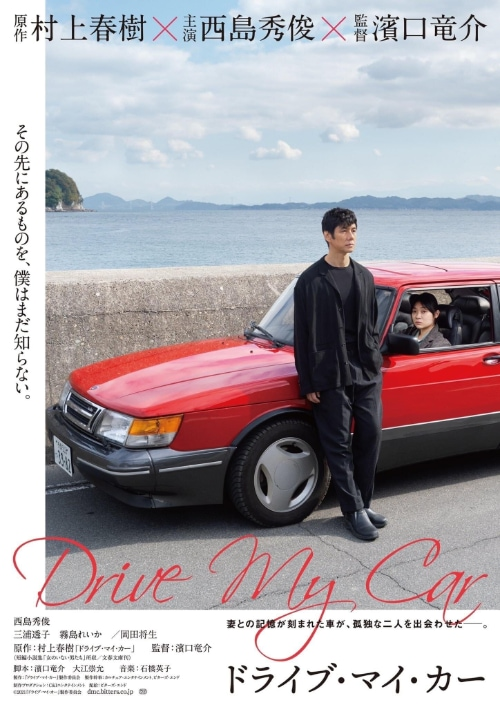

Drive My Car (2021)

Классное японское кино по рассказу Харуки Мурками.

Классное японское кино по рассказу Харуки Мурками.
Хорошее интервью Александра Роднянского:
Вы знаете, я постоянно повторяю одну и ту же вещь, в которую я верю. И мне кажется, она важная. Я полагаю, что главной болезнью современной России является невероятно зашкаливающий цинизм, неверие в наличие подлинных целей, подлинных ценностей, идей и принципов. Это такое господствующее убеждение в том, что идей, принципов и ценностей нет ни у кого. Просто есть те, кто хорошо это скрывают. А есть мы, честные, которые говорят как есть - у нас их [принципов и ценностей] нет.
Мы говорим: вот есть враги и есть только вечные интересы. Это такая на самом деле концепция XIX века, времен, когда складывались национальные государства и огромные империи. И когда в качестве ключевого критерия предлагался интерес конкретного государства.
Но мы живем в другие времена - в которые, в особенности после Второй мировой войны, как это ни наивно звучит, Декларация прав человека и вера в индивидуальные свободы, верховенство права, независимый суд, независимые медиа являются среди прочего гарантом выживания человечества.
Человечество после Второй мировой войны придумало совершенно другой способ выживания, оно придумало возможность сосуществования разных государств, связанных между собой торговыми, экономическими отношениями. Вот так возник Европейский союз, и страны, которые столетия воевали - Франция и Германия - стали платформой объединения Европы в единое целое.
Россия, в силу своей циничных времен советской истории, утратив веру в лучшее, естественно, не верит в то, что ЕС основан на принципах, на идеях, на европейской цивилизации, которая столетиями выработала в себе этот иммунитет культурный и нравственный по отношению к тому, о чем мы говорим. Соответственно, лидеры российской сегодняшней идеологии - они лидеры современного цинизма.
И еще:
Мне кажется, это классическая агония. Ну просто агония может продолжаться долго. Может коротко, а может и пять лет будет, и 10. На данном этапе санкции в отношении России намного жестче, чем в 1980-е годы во время войны в Афганистане. И у России нет ничего - ни вариантов, ни союзников, ни понимания, ни идеологии, которую она может предложить. Есть безумная обида и желание мести - и больше ничего.
Люди, которые управляют страной, прекрасно понимают, что у них нет больше шансов, с ними никто за стол переговоров не сядет и ничего обсуждать не будет. Шансов передоговориться - тем более на каких-то условиях, на которых они мечтают устроить мир как-то иначе. Сейчас идет война не столько против Украины и даже не против США, а против мирового порядка - он не устраивает. Недостаточно много места дали, и хочется туда, в 1945 год, но не получается. Это ментальная ловушка, застряли в исторической ментальной ловушке.
Российское общество "Мемориал" было ликвидировано 28 февраля 2022 года.
Вдруг вспомнил про этот альбом и захотел переслушать. И снова залип.
Я узнал про этот фильм и книгу из вот этого интервью Олега Дормана. Я не смог найти фильм, поэтому читаю книгу, но в голове у меня все равно звучит ее голос (и если хотите такого же эффекта, то посмотрите интервью, в котором есть фрагменты фильма, или найдите сам фильм).
Ну и, конечно, это непременно нужно читать. Или смотреть. Или слушать. Непременно.

Посмотрел с удовольствием!

Понравилась инсталляция Константина Беньковича — Часы "Россия":
Нижний Новгород – место, навсегда связанное с Андреем Сахаровым, Борисом Немцовым и Ириной Славиной. Академик Андрей Сахаров – предвестник нового времени и новой страны - провел семь лет в ссылке в Горьком за борьбу с тоталитарной системой. Борис Немцов – первый Нижегородский губернатор, перспективный политик, символ перемен и надежд – был убит за свои убеждения. Ирина Славина - независимая журналистка, общественная деятельница – совершила акт самосожжения в ответ на беззаконие, оставив перед смертью запись в Фейсбуке: "В моей смерти прошу винить Российскую Федерацию".
Механизм часов, подобно России сегодня, движется назад, а не вперёд. В 1991 году, после распада СССР, было время надежд жить в стране победившей демократии с набором либеральных ценностей, со свободой слова, сменяемостью власти, честным судом и равенством всех перед законом. Спустя тридцать лет эти надежды, к сожалению, не оправдались.
Очень точно.
Я прочитал о том, как Денис Карагодин выяснил имена сотрудников НКВД, причастных к убийству его деда, еще несколько лет назад, сейчас же, кажется, самое время об этом расследовании напомнить, потому что есть некоторая ненулевая вероятность, что родственники палачей все же добьются блокировки ресурса, представляюещего, на мой взгляд, неоспоримую историческую ценность.